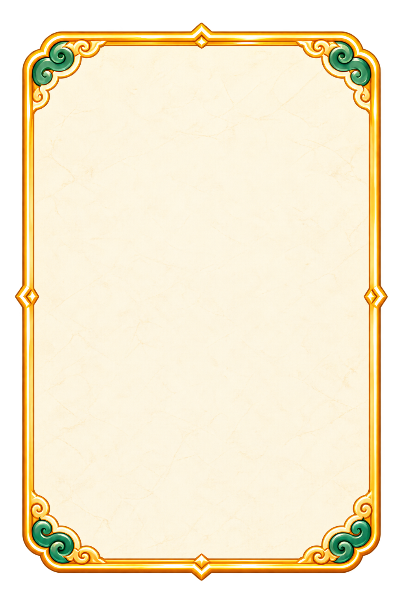
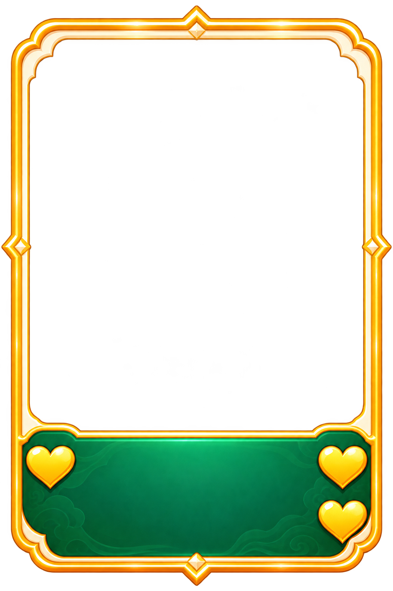
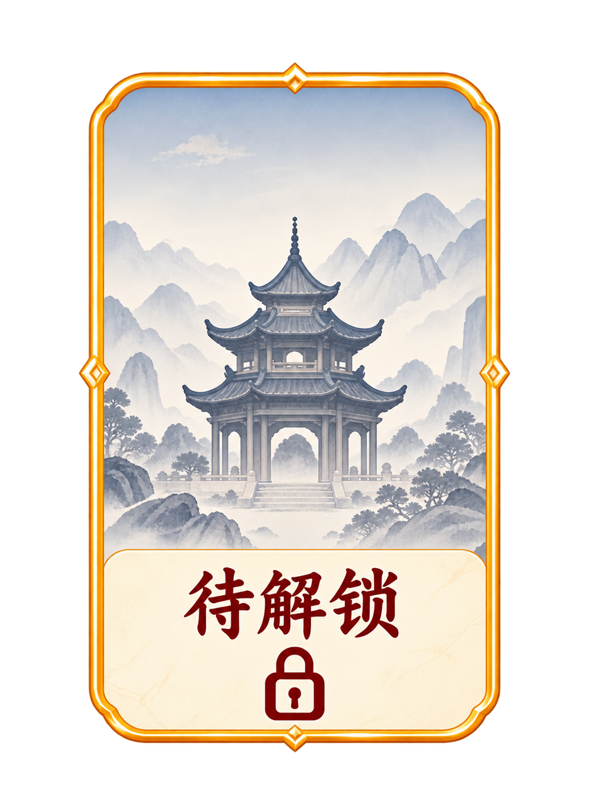
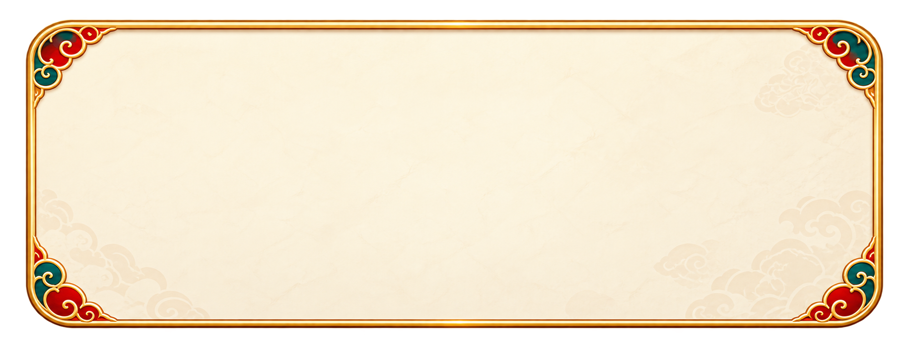
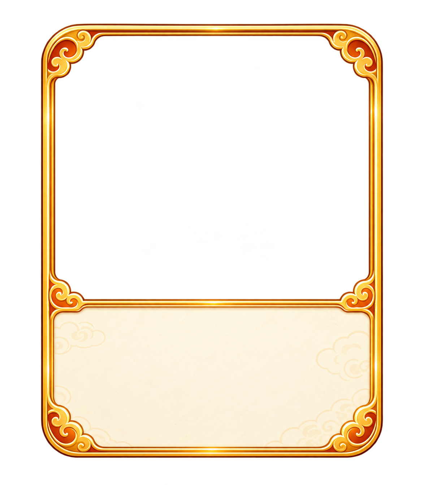
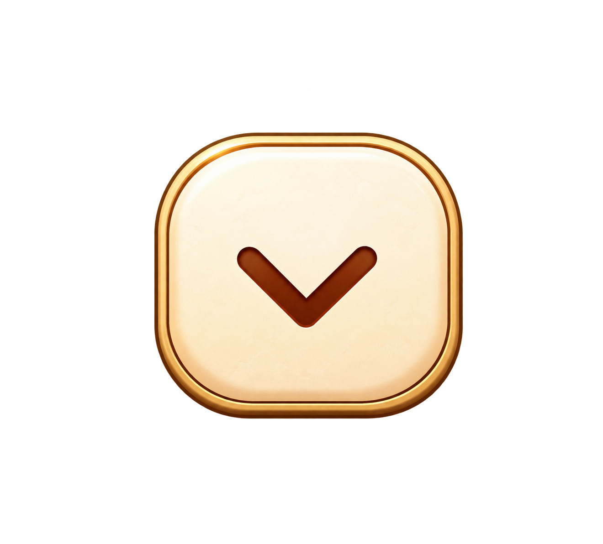

01_首页_艺术标题
首页：HomeScreen / HomeTitleArt
home_title2057 × 764 · RGBA PNG
下载原尺寸 PNG02_首页_城市大卡_空白底框

首页：CityCard / 城市大卡底框
home_city_card_frame1024 × 1536 · RGBA PNG
下载原尺寸 PNG03_首页_已解锁小卡_空白底框

首页：HomeScreen._rebuild_collection / 已解锁小卡
home_collected_card1024 × 1536 · RGBA PNG
下载原尺寸 PNG04_首页_待解锁小卡_完整默认图

首页：GuideUI.locked_art / 待解锁统一默认图
home_locked_card1086 × 1448 · RGBA PNG
下载原尺寸 PNG05_首页_随机点亮按钮_空白底图
首页：HomeScreen._button / 随机点亮按钮
home_draw_button2174 × 723 · RGBA PNG
下载原尺寸 PNG06_详情页_返回按钮_含图标文字
详情：CityDetailScreen / 返回按钮
detail_back_button1760 × 894 · RGBA PNG
下载原尺寸 PNG07_详情页_城市标题牌_空白底框
详情：CityDetailScreen / title_frame
detail_title_plaque2172 × 724 · RGBA PNG
下载原尺寸 PNG08_详情页_推荐区_空白面板

详情：CityDetailScreen / FoodTray
detail_recommendation_panel1997 × 787 · RGBA PNG
下载原尺寸 PNG09_详情页_推荐美食卡_空白底框

详情：CityDetailScreen / FoodCard*
detail_food_card1174 × 1340 · RGBA PNG
下载原尺寸 PNG10_详情页_城区标签_空白底图
详情：FoodCard* / district 标签
detail_district_chip2146 × 733 · RGBA PNG
下载原尺寸 PNG11_详情页_推荐区收起按钮

详情：CityDetailScreen / TrayToggle
detail_collapse_button1320 × 1192 · RGBA PNG
下载原尺寸 PNG12_详情页_我要打卡按钮_空白底图
详情：CityDetailScreen._check_button / 我要打卡
detail_checkin_button2172 × 724 · RGBA PNG
下载原尺寸 PNG13_详情页_地图美食点_空白标记
详情：MapViewport.configure / 地图美食点
detail_food_pin1278 × 1230 · RGBA PNG
下载原尺寸 PNG